My Research
I'm trying to understand the properties of and processes governing dusty star-forming galaxies (DSFGs) across cosmic time.
esawebb.org
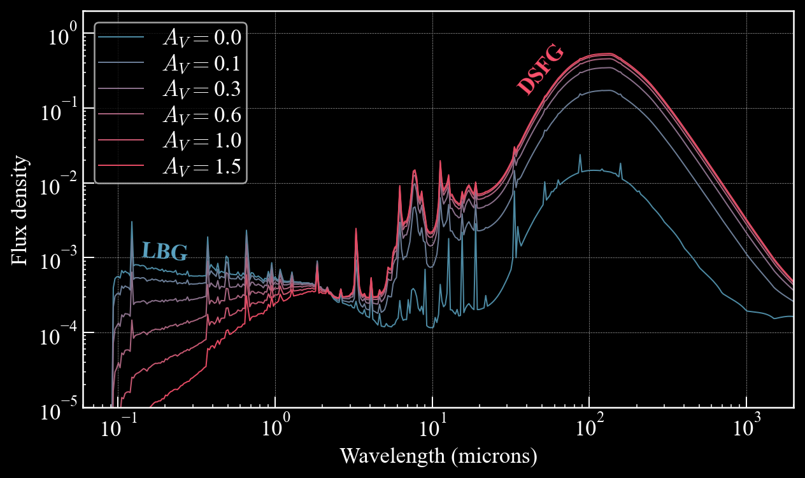
Data and Observing
I'm an observational astronomer whose research all depends on multiwavelengh data from multiple observatories, so I'm very grateful to have had the opportunity to observe with, or use data from, some of the most powerful telescopes on (and off) the planet. I rely in particular on observations from the best submillimeter telescopes in existence, including the James Clerk Maxwell Telescope (JCMT), the Atacama Large Millimeter/submillimeter Array (ALMA), and the NOrthern Extended Millimeter Array (NOEMA). I also use data from the James Webb Space Telescope (JWST), which is already revealing populations of galaxies formed when the Universe was less than 500 million years old.
I have had the chance to observe both remotely and in person with the Keck I and II telescopes in Hawaii, especially with the MOSFIRE spectrograph. I use MOSFIRE to measure very accurate distances to galaxies by detecting bright redshifted emission lines via spectroscopy.
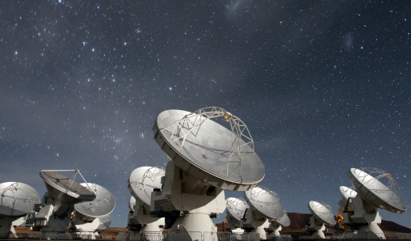
ALMA (nrao)
JWST (webbtelescope.org)
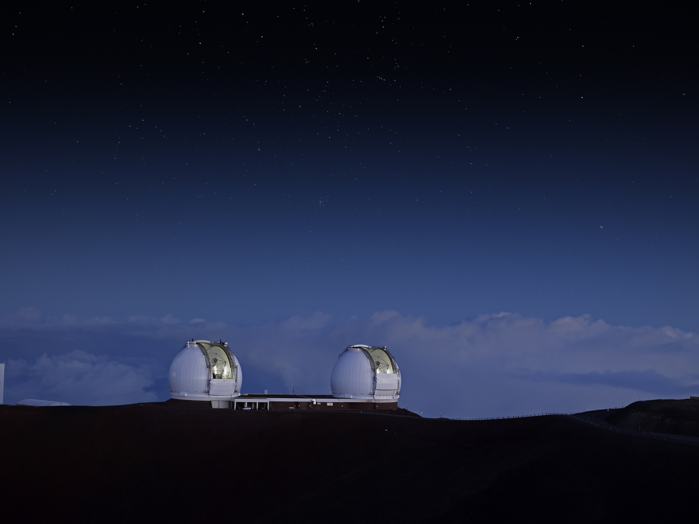
KECK (keckobservatory.org)
Identifying DSFGs with Red Colors in JWST imaging
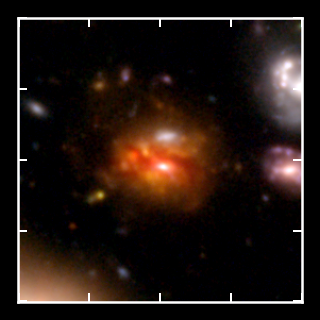 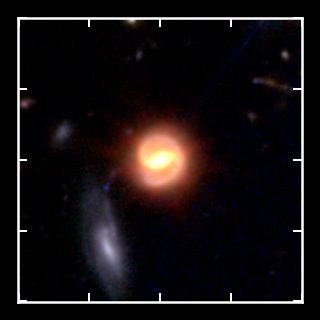
Using direct submillimeter imaging with ALMA, I confirmed that this method can identify the correct near-infrared "counterpart" to the submillimeter source up to 95% of the time.
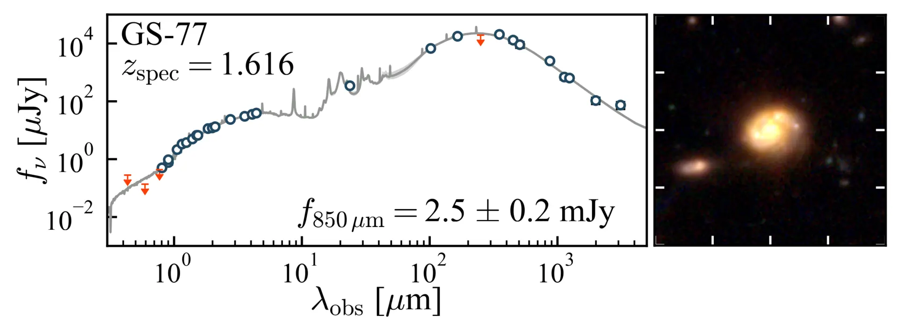
I found that, on average, these galaxies have large exponential disks with hints of central bulges in formation. Interestingly, the brightest submillimeter galaxies (the most extreme) seem to be similar in mass and shape to the fainter ones (more common), even though we might expect them to be powered by different processes. Read more about our results at the link below:
Dust Properties of DSFGs using ALMA
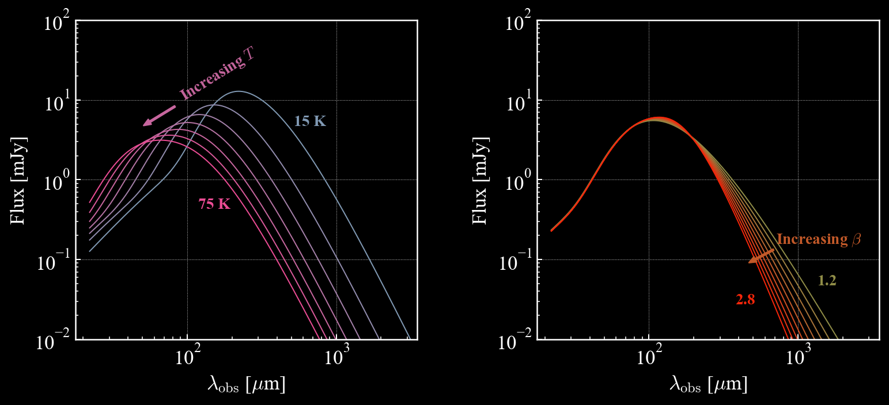
We used ALMA continuum observations at 870 μm, 1 mm, 2 mm, and 3 mm along with shorter wavelength data from Spitzer, Herschel, and JCMT/SCUBA-2 to pin down the dust emission shape in unprecedented depth and detail for galaxies observed when the Universe was only ~3 billion years old. We compared our results to observations from the local Universe and other DSFG studies, finding pretty consistent measurements and no evidence for dust temperature evolution with redshift for a given IR luminosity.
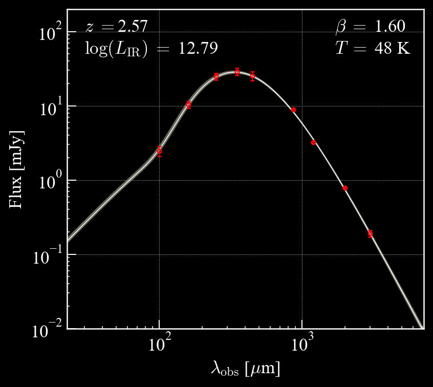
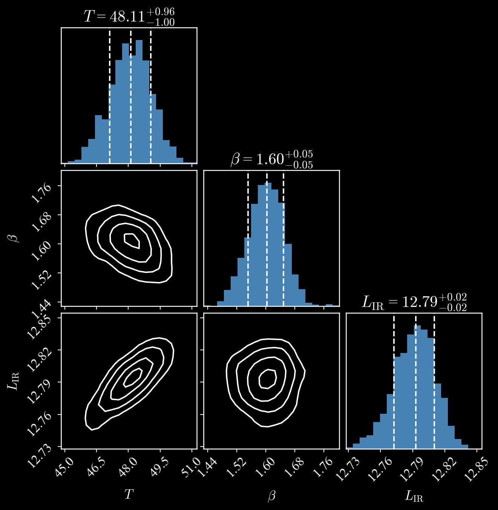
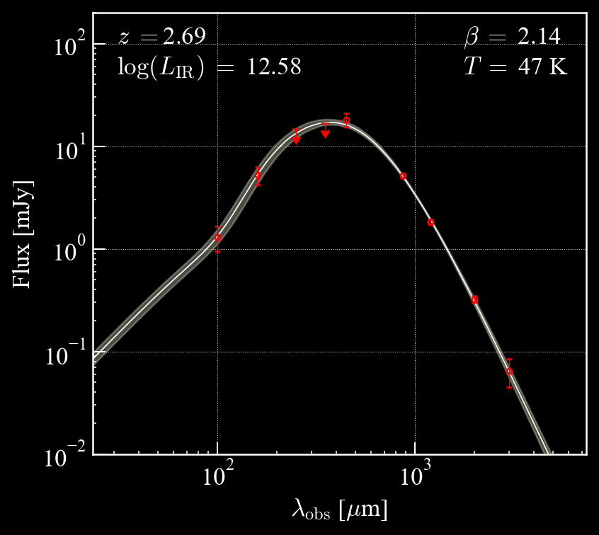
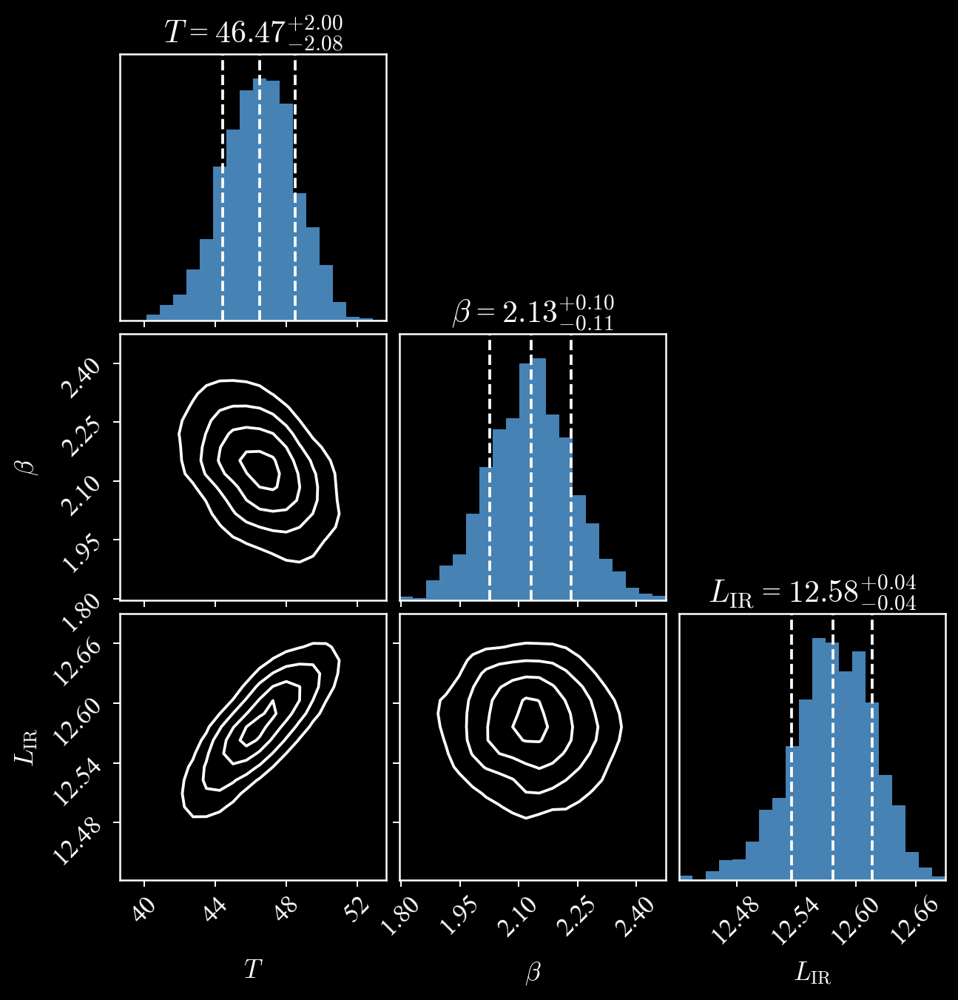